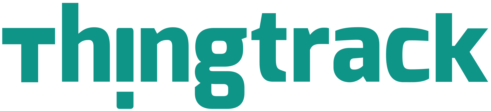

<!--<nz-layout class="layout">
  <nz-header style="position:fixed; width:100%">
    
    <ul nz-menu [nzTheme]="'dark'" [nzMode]="'horizontal'" style="line-height: 64px;">
      <li nz-menu-item routerLink="/product" [nzSelected]=true><i class="anticon anticon-skin"></i>Products</li>
    </ul>
  </nz-header>
  <nz-content style="padding:0 50px; margin-top:64px;">
      <router-outlet style="background:rgb(82, 91, 129);"></router-outlet>
  </nz-content>
  <nz-footer style="position: relative; text-align: end;">Pivotal Cloud Foundry Developer training ©2018 Implement By Angular</nz-footer>
</nz-layout>
-->
<router-outlet style="background:rgb(82, 91, 129);"></router-outlet>